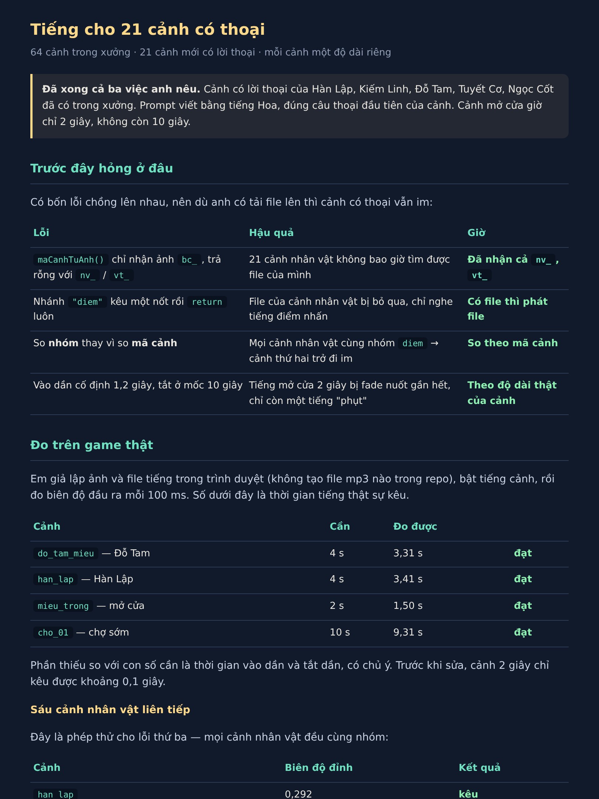
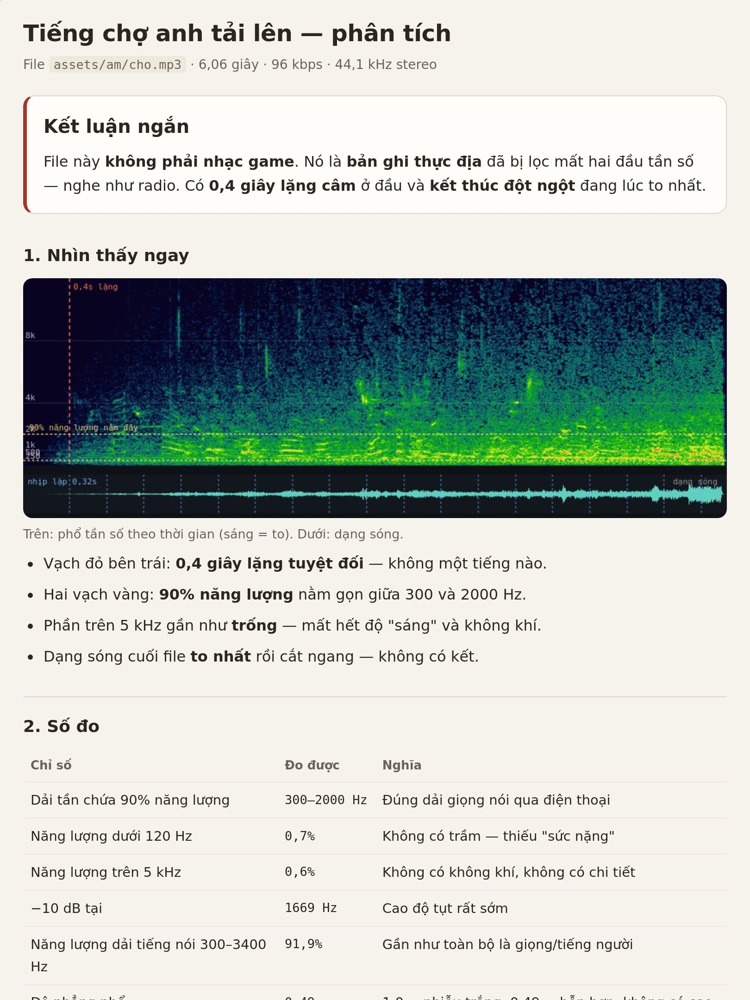
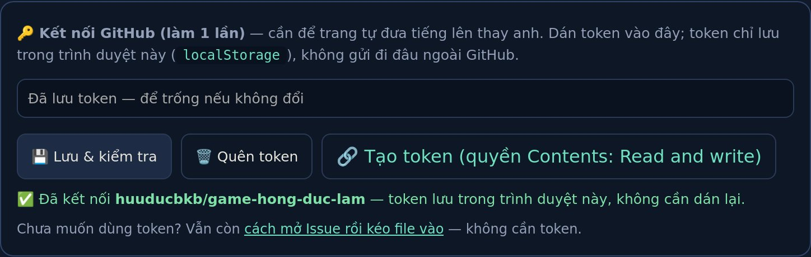
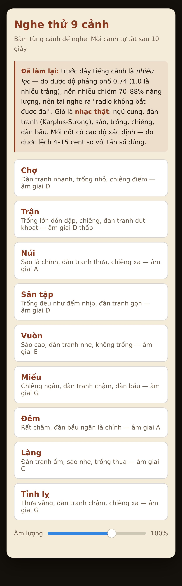
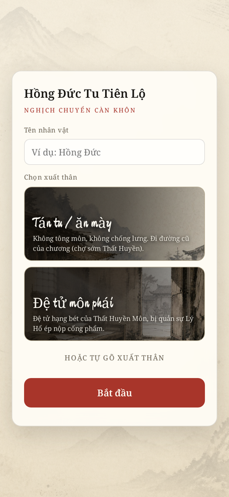
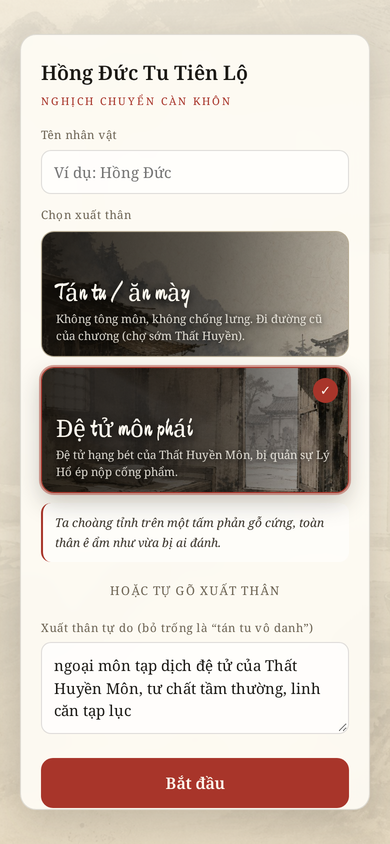

Báo cáo gần đây
Mới nhất ở trên · chụp từ bản đang chạy trên GitHub Pages
→ Chương 2 đã viết xong — Tiểu hội Thái Nam Sơn Cốc
55 đoạn, 72 lựa chọn, 2 nhánh. Chơi trọn từ Chương 1 sang Chương 2 trên khổ iPhone, chụp 18 ảnh thật. 178 phép kiểm Python và 160 phép kiểm JS đều đạt. Còn 4 cảnh đang mượn ảnh Chương 1 vì hết hạn mức vẽ.
Bảng giọng đầy đủ 15 nhân vật, đọc thẳng từ prompt thật nên không bao giờ lệch. Mỗi nhân vật: tuổi, giới, câu mô tả giọng dùng trong prompt, các biến thể theo tình huống, và danh sách cảnh có lời người đó. Tuyết Cơ 21 cảnh, Kiếm Linh 14, Hàn Lập 7.
→ Cảnh sau trận giờ có hai lối rẽ thật
Trước đây hai nút cùng dẫn về một đoạn. Giờ mỗi nút rẽ một đường, có đoạn riêng ở cả hai nhánh (môn phái và tán tu). 159/159 phép kiểm đạt, bấm tay trong trình duyệt thật đã xác nhận. Còn thiếu 2 ảnh và 2 đoạn tiếng.
→ Kiểm 66 file tiếng anh vừa úp
Không file nào trùng, không file nào câm, mã băm khớp 100%. Nhưng còn 12 cảnh cần tạo lại: 2 cảnh chưa có tiếng, 10 cảnh có tiếng nhưng tạo từ prompt chưa có thoại. So prompt tại đúng lúc úp mới thấy — so với prompt hiện tại thì không.
→ Tiếng cho 21 cảnh có thoại: Hàn Lập, Kiếm Linh, Tuyết Cơ
Thêm 21 cảnh có lời thoại vào xưởng (64 cảnh tất cả), prompt tiếng Hoa đúng câu thoại đầu tiên. Sửa bốn lỗi làm cảnh nhân vật không bao giờ phát được tiếng, và bỏ mốc 10 giây cố định — cảnh mở cửa giờ 2 giây. Đo trên game thật: 6/6 cảnh nhân vật liên tiếp đều kêu.

→ Phân tích tiếng chợ anh tải lên: vì sao nghe như radio
Đo file cho.mp3 anh tải lên:
90% năng lượng dồn 300–2000 Hz, gần như không có gì dưới 120 Hz và trên
5 kHz, cao độ trôi 78–501 Hz, 92% năng lượng nằm trong dải tiếng nói. Đó là
bản ghi thực địa đã bị lọc hai đầu tần. Có 0,4 giây lặng câm ở đầu và
kết thúc đột ngột đang lúc to nhất. Đã viết lại 9 prompt thành âm thanh môi
trường (ambience) — không nhạc, không nhạc cụ, không giai điệu — và thêm
từ khoá tiếng Anh để tìm nguồn trên thư viện.

→ Xưởng âm thanh: prompt 10 giây, dạng nhạc game
Prompt cũ mở đầu bằng Field recording of… và
cấm nhạc lẫn nhạc cụ — nên file nghe như radio hoặc như micro đặt giữa chợ thật.
Viết lại cả 9 prompt: nói rõ KHÔNG phải bản ghi thực địa, liệt kê từng lớp
(đàn tranh, sáo, trống, chiêng, đàn bầu, nền đệm), thang ngũ cung, đúng
10 giây — khớp độ dài cảnh trong game.
Sửa thêm lỗi nối vòng: cho.mp3 có
0,3 giây lặng câm ở đầu và kết thúc giữa tiếng, mà game đặt loop=true
nên mỗi vòng nghe một khoảng câm rồi tiếng cụt. Giờ cắt lặng hai đầu rồi crossfade
80 ms. Lỗi này ảnh hưởng mọi file anh tải lên.
→ Xưởng âm thanh: token không còn mất khi tải lại
Token không hề mất — nó vẫn nằm trong
localStorage và việc gửi file vẫn chạy. Lỗi là trang không khôi phục
giao diện khi tải lại: ô token trống trơn, không dòng nào báo đã kết nối, nên
tưởng mất và dán lại mỗi lần. Giờ trang tự kiểm tra lại token và hiện
"Đã kết nối … không cần dán lại". Đo 7 tình huống: chưa có token, vừa lưu,
tải lại, bấm Lưu khi ô trống, token hết hạn, mất mạng, Quên token.

→ MỚI: tiếng theo cảnh (hướng 3)
68 cảnh chia chín nhóm tiếng nền, dựng bằng code, không thêm file. Mặc định tắt, bật trong bảng Hệ Thống.
→ Phòng đo tiếng (mở trên iPhone thật)
Tự đo trạng thái âm thanh và mức tiếng thật, rồi xuất báo cáo gửi lại. Dùng để tìm ra chỗ tiếng im mà máy giả lập không mô phỏng được.
→ Hướng dẫn dùng phòng đo tiếng
Ba bước, kèm ảnh chụp. Đọc trước khi mở phòng đo.
→ Sửa lỗi "bấm lần sau không kêu"
Tải lại trang khi đang chơi thì cả phiên im — vì đường vào đó không đi qua nút "Vào game". Đo tín hiệu thật, tìm ra 4 lỗi, sửa cả 4.
→ Sửa nút loa che chữ và nút Bắt đầu
Bỏ nút loa trên phim. Nút "Bắt đầu" bị cắt khỏi màn hình trên iPhone — tìm ra nguyên nhân thật (khung fixed tính theo màn đầy đủ) và sửa, đo 6 cỡ màn.
Bấm từng cảnh để nghe, mỗi cảnh tự tắt sau 10 giây. Làm lại từ gốc: tiếng cũ là nhiễu lọc — độ phẳng phổ 0,74 (1,0 là nhiễu trắng), nền nhiễu chiếm 70–88% năng lượng, nên nghe như "radio không bắt được đài". Giờ là nhạc thật: ngũ cung, đàn tranh (Karplus-Strong), sáo, trống, chiêng, đàn bầu. Đo 45/45 nốt đúng, lệch tối đa 16 cent; độ tuần hoàn R=1,000 so với nhiễu trắng 0,022.
Cảnh chợ giờ phát bản ghi thật của anh (Xưởng vừa ghép). Đo được file đó nhỏ hơn nhạc tổng hợp 3,3 dB nên đã bù lên — giờ chợ −20,4 dBFS, lệch 0,5 dB so với 8 cảnh còn lại, không cắt tiếng.

43 cảnh, mỗi cảnh một prompt tả cái người chơi nghe thấy khi đứng đó — không phải tả nhạc. Chợ sớm chen chúc khác chợ chiều vắng tanh; ngõ sau chợ là nghe lén ba người nói chuyện Dã Lang Bang. Tiếng người đều ghi rõ tiếng Việt.
Chọn video là xong, không phải tách tiếng trước. Trình duyệt tự trích 12 giây và nén mp3 ngay trên máy — video không được tải lên, nên không nằm trong repo. Đo trên Safari/iPad: mp4, mov HEVC đều được; không request nào chứa video.
Bốn tiếng ngắn tự tạo trong máy, không thêm file nào. Nút tắt ở ba chỗ và nhớ lựa chọn. Đo tín hiệu thật, tìm ra 4 lỗi và sửa.
→ Dòng hành động sáng đỏ khi bấm
Bấm vào hành động nào thì chỉ dòng đó sáng đỏ, giữ 320ms. Màu đỏ đo được 4.62:1 nên vẫn đọc được.
→ ĐÃ SỬA: nút Bắt đầu không bấm được
Chọn xuất thân xong nút bị đẩy ra ngoài màn hình (y=795, màn cao 664). Đã sửa, bấm được trên 5 kiểu màn.
→ Đã bỏ nền vuông ở dòng hành động
Mỗi dòng hành động bị đóng trong hộp giấy viền mực. Đã bỏ hộp, thu gọn 62→44px.
Ấn son hiện thành ô vuông giấy đặc 22×22. Đã tách nền, so ảnh trước/sau.
Ảnh up vào được nhưng bị vòng trang trí đục che kín. Ba lỗi, ảnh trước/sau, đo được.
→ Mỗi xuất thân một chỉ số riêng
Tán tu và đệ tử môn phái giờ có bộ chỉ số khởi đầu khác nhau thật.
Báo cáo cũ: giao diện chọn xuất thân
Hướng C · chụp từ bản đang chạy trên GitHub Pages, khổ iPhone 390×844
| Đã làm | Nền màn hình đổi ảnh theo xuất thân đang chọn + hiện câu mở đầu thật |
| Đụng vào game | Không. Chỉ HTML/CSS/JS của màn chọn |
| Chỉ số khởi đầu | Giữ nguyên (2 xuất thân vẫn giống hệt nhau) |
| Test | 28 điểm giao diện · engine 105/105 · API 161/161 |
1. Chưa chọn gì
Nền trơn, chưa có trích đoạn.

2. Chọn Tán tu / ăn mày
Cả nền đổi sang ảnh góc chợ sớm, hiện câu mở đầu: “Ta mở mắt giữa một góc chợ, lưng tựa vào bức tường lạnh…”

3. Chọn Đệ tử môn phái
Nền đổi sang tân xá buổi sáng, câu mở đầu đổi theo: “Ta choàng tỉnh trên một tấm phản gỗ cứng…”

Đo được gì
- So 2 ảnh chụp tán tu vs môn phái: 78% điểm ảnh vùng mép trái đổi màu → nền đổi thật.
- Trước khi chọn:
nenHien=false, trích đoạn rỗng. Sau khi chọn:opacity=0.42. - Bỏ chọn thẻ: nền tắt, trích đoạn rỗng.
- Không lỗi JS trên bản live.
Còn chưa làm
Hai xuất thân vẫn cho chỉ số khởi đầu y hệt nhau (30 sinh lực · 12 tu vi · 3 bạc), chỉ đoạn mở đầu khác. Vì vậy thẻ không hiện chỉ số riêng — hiện số là bịa. Muốn khác nhau thì phải sửa dữ liệu + engine, việc đó cần bạn cho phép.